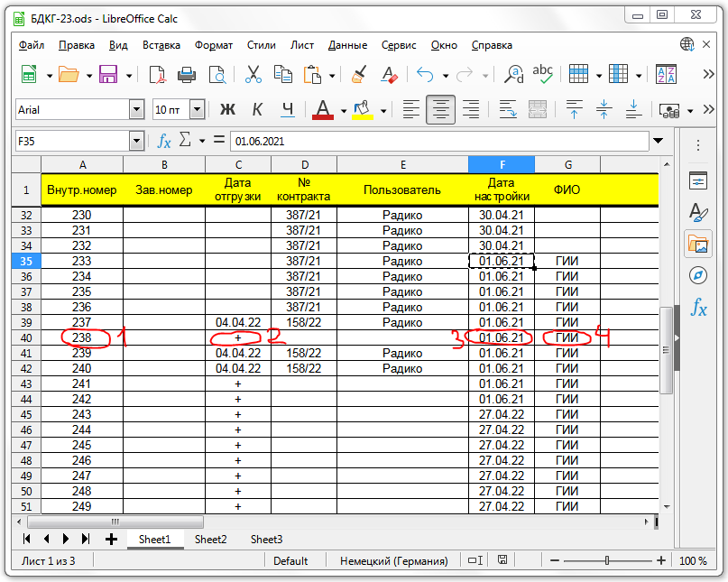
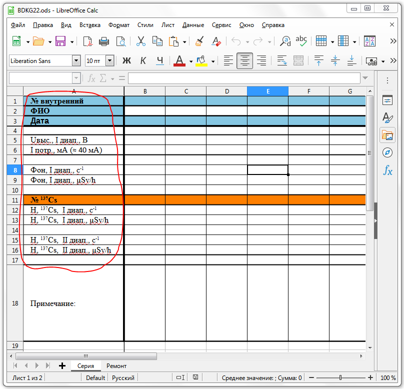
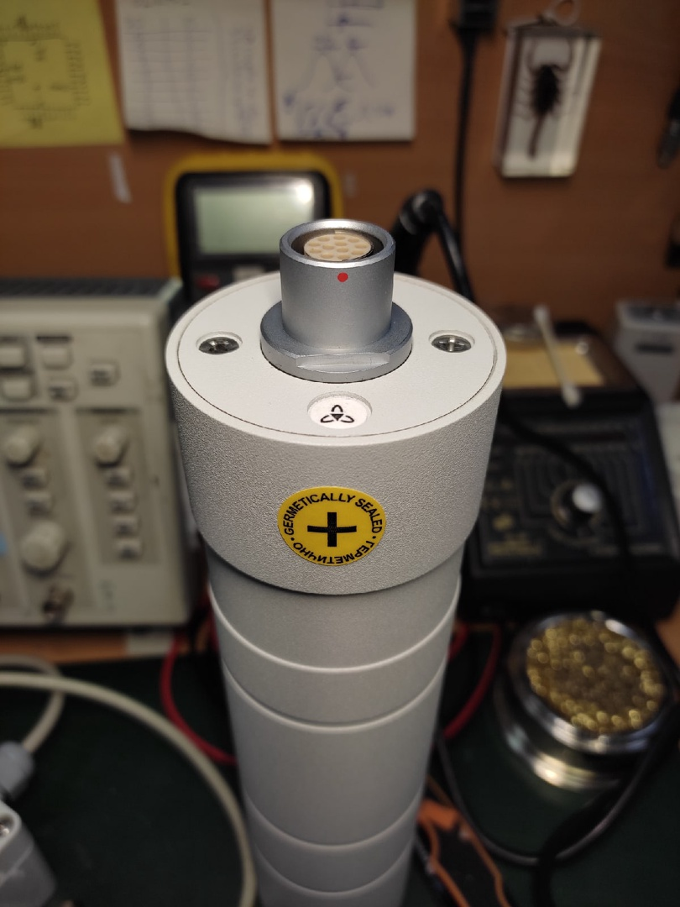
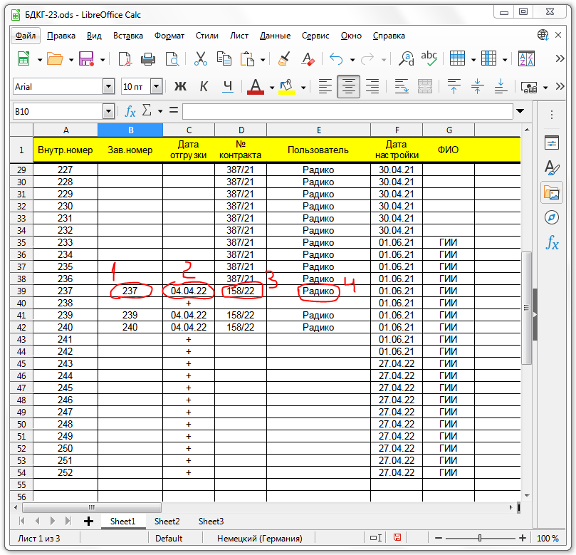
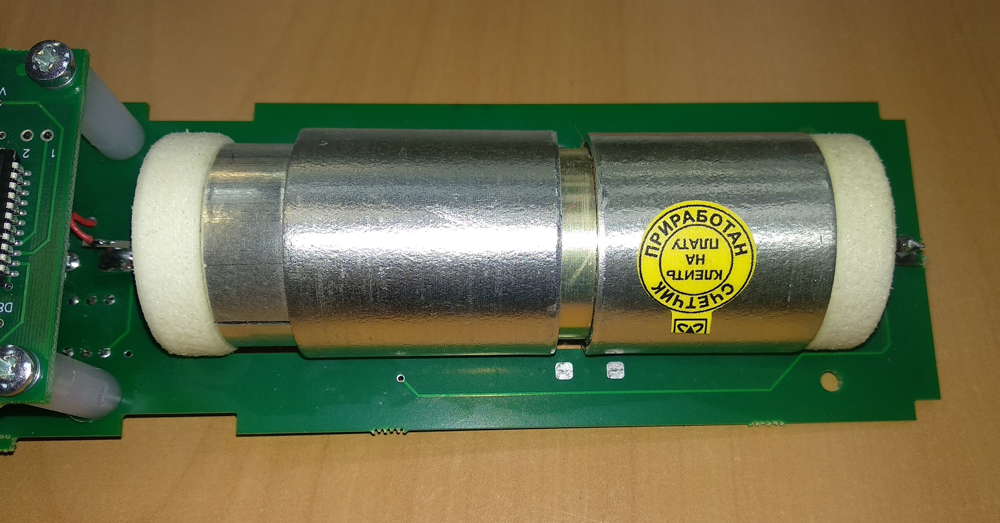
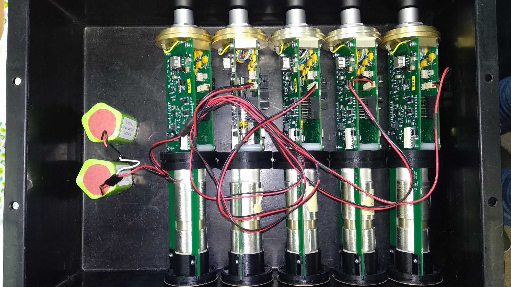
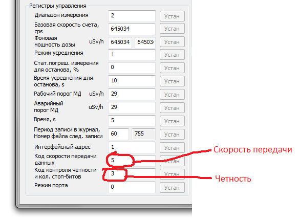

БДКГ-22/23
Прошивка
Как подключаться
Как принудительно переключать диапазоны
Как настраивать фон
Как записать серийный номер в память БД
Таблица для записи фона
Перечень
Журнал градуировок БДКГ-22
Журнал градуировок БДКГ-23
Журнал градуировок БДКГ-23/1
Схемы кабелей
Как подключаться
Как принудительно переключать диапазоны
Как настраивать фон
Как записать серийный номер в память БД
Таблица для записи фона
Перечень
Журнал градуировок БДКГ-22
Журнал градуировок БДКГ-23
Журнал градуировок БДКГ-23/1
Схемы кабелей
Лучше всего использовать уже приработанные счетчики, тогда после настройки блоки сразу же уйдут на сборку, а
после — сразу же на линейку, что очень сильно ускоряет процесс. При этом счетчики приработанные с
помощью плат от 6130 прирабатываются с точностью до импульса, а приработанные в блоке — плюс-минус
пару часов, а это больше 7000 импульсов.
- Подключить БД к BDKG-22 Utility
- Проверить в BDKG22_Utility соответствие прошивки настраиваемому блоку, и, если выявлено несоответствие, перепрошить
- Присвоить номера:
- Наклеить номер на плату
- Записать в память БД серийный номер, месяц, год и "нулевые" коэффициенты
- В электронный перечень БДКГ-22 или БДКГ-23 записать внутренний номер (1), поставить "+" в графе "Дата отгрузки" (2), дату настройки (3) и ФИО (4) 
- Заполнить базу настройки БДКГ-22 или БДКГ-23 в соответствии с требуемыми параметрами: 
- Проконтролировать ток потребления (~40мА).
- Проверить показания на фоне (скорость счета где-то 0,6 cps, набрать статистику не более 25%), записать в таблицу скорость счета и мощность дозы.
- Проверить показания от источника (105) — в 1-ом диапазоне (~60 cps, набрать статистику не более 3%) и 2-ом диапазоне (~0,10 cps, набрать статистику не более 50%). В 3-ем (и 4-ом) диапазоне показания от такого источника будут нулевые, поэтому в 3-ем (и 4-ом) диапазоне проконтролировать нулевые показания.
( Как принудительно переключать диапазоны ) Записать в таблицу.

Для 1-ого диапазона 
Для 2-ого диапазона - Отдать на сборку стаканов
- Отдать на линейку
- Проверить БД на герметичность. После успешного прохождения наклеить круглую наклейку "ГЕРМЕТИЧНО HERMETICALLY SEALED +" сбоку напротив ключа разъёма 
- Настроить фон
- Установить дату (месяц и год) соответствующую дате отгрузки (по контракту)
- Поставить пломбы, наклеить наклейки
- Записать в электронный перечень БД заводской номер (1), дату отгрузки вместо "+" (2), номер контракта (3) и потребителя (4) 
- Сделать протокол поверки или калибровочный сертификат
Замерить напряжение на конденсаторе С1. Записать в таблицу

Если вдруг в БД стоят НЕ ПРИРАБОТАННЫЕ счетчики, отдать на приработку
Сейчас все счетчики ставятся в БД уже приработанными. Узнать, приработан ли счетчик, можно по наклейке:  Если вдруг счетчик всё-таки не приработан, тогда надо без стаканов подключить все блоки через HU2 разъем к аккумулятору (см. на фото) и снести на линейку. Должны ночь постоять. После приработки наклеить на счетчик наклейку После того, как прошли линейку, проверить по журналу градуировок, прошел ли блок по параметрам.

Создать резервную копию калибровочных коэффициентов (снизу справа кнопка, сохраняет в память блока)
Бывает, выскакивает ошибка "Разрушены проч данные в Epprom — пофиг, потом пропадет"
Если необходимо изменить четность или скорость обмена:
- С 19200 на 9600, например, — изменить с 6 на 5 
- Нажать "Устан"
- Для сохранения изменений выкл/вкл питание
- Про коды можно почитать здесь (про четность — стр.9)